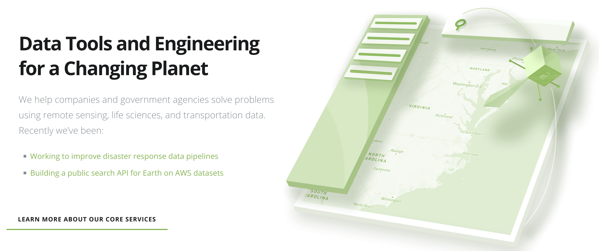

Drone Path

Historic Aerial Footage

Forest Fire

Vegetation

Collections

AWS Groundstation

AWS Groundstation

DigitalGlobe
- 1-60 minutes
- 80 TB/day
- 100 TB
- 40% S3 cache hit rate
Science Code
Ground Control Point

Projection

Lenses
Build your own map UI
Why Gatsby
- Avoid editing webpack files
- Easy styling
- Production quality javascript builds
- Makes basic page routing a breeze to set up
UI
- Gatsby - Web UIs hosted on S3
- Leaflet.js
Leaflet.js
// initialize the map on the "map" div with a given center and zoom
const map = L.map('map', {
center: [51.505, -0.09],
zoom: 13
});
Leaflet.js

Backend - browsing Tiles
- Folder structure: zoom + location
- S3 - byte ranging
Geotiff.js - Browser

Geotiff.js - Tile
Geotiff.js - Network

Geotiff.js - Tile

Geotiff.js - Tile

Processing Pipeline
- JavaScript - Glue code
- Science code (Python, ...)
Why Javascript lambdas
- Cost control
- Fast startup time
- Microservices
Gatsby - Lessons learned
- Occasionally some hiccups from being on the bleeding edge/upgrading fast
- Opinionated defaults prevent engineers from arguing - but lots of escape hatches
- Hosting on S3- minor hiccups with JSON files
References
- https://blog.dronedeploy.com/case-study-830cfc23db55#.e0xl69177